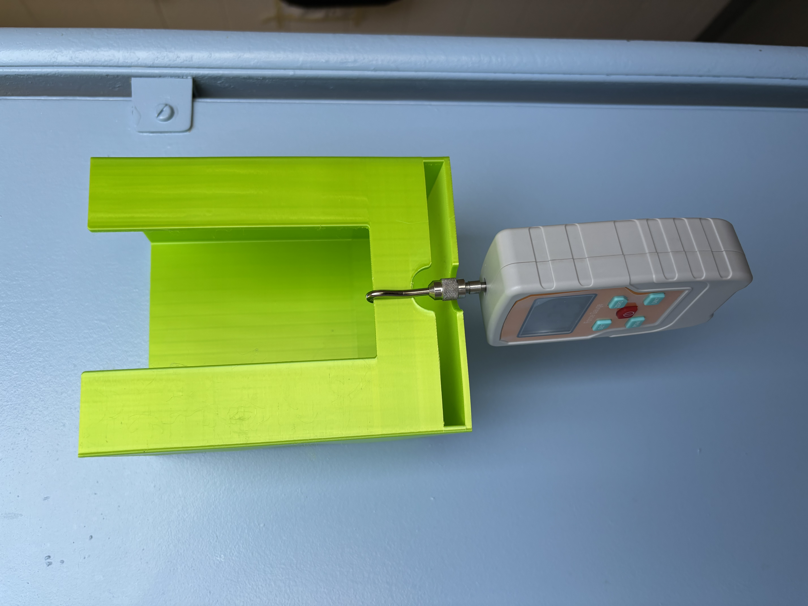
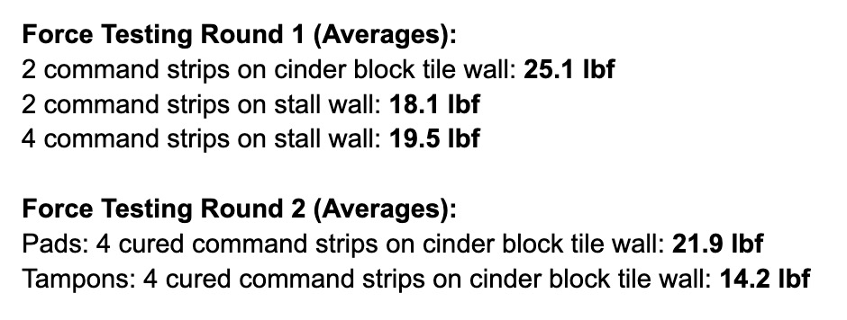
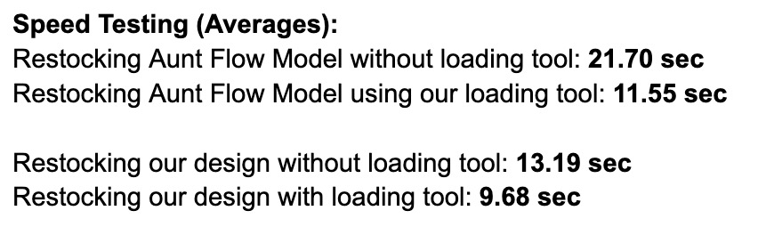

As the semester wraps up, we finalized our designs by conducting a series of validation tests, prepared open-source documentation so other users at Brandeis and beyond can utilize the products, and practiced for our final presentations.
Design Validation Tests
In testing our prototypes, we aimed to estimate the amount of force the dispensers could withstand, measure the time needed to restock them, and evaluate the feasibility of installing them in various bathroom locations.
For force testing, we measured the amount of force the dispensers could withstand before falling off the walls. We experimented with applying two or four command strips to our dispensers to see if additional strips would provide greater support. To our surprise, the dispensers and command strips could withstand more force than expected, to the point where we felt confident that if a person accidentally bumped into the dispensers in the bathroom, they wouldn’t fall down.
 Force Testing Setup  Force Testing StatisticsIn our next round of testing, we evaluated whether or not our design made the restocking process quicker and less cumbersome compared to the Aunt Flow model.
 Speed Testing Statistics Using the loading tool in the existing Aunt Flow dispensers Testing the restock process for our new pad dispenserOverall, we found that using our loading tool made the restocking process for the existing Aunt Flow models much easier. In comparing our new dispenser design with the Aunt Flow, we found that our design streamlined the restocking process. Additionally, we felt that the installation process of using command strips or hooks was accessible, relatively durable, and quick, which is helpful if we wanted to expand this product to more buildings across campus.
From our testing sessions, we found that developing a loading tool for tampons like we did for pads would be helpful in making the restocking process for the existing Aunt Flow model easier. We also discovered that we could make modifications to the clearance at the side of our tampon dispenser design as well as an adapted ramp design to prevent jams during refilling.